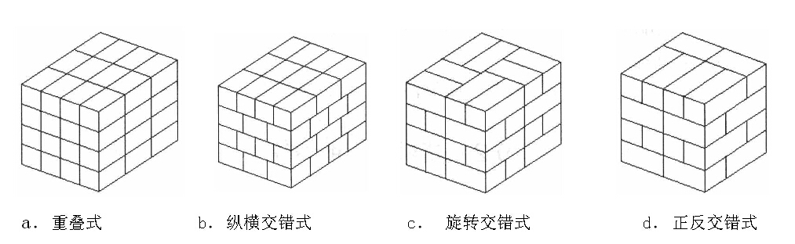

6.1码垛工艺
6.1.2托盘码垛
托盘是用于集装、堆放、搬运和运输的放置作为单元负荷的物品和制品的水平平台装置。在平台上集装一定数量的单件物品，并按要求捆扎加固，组成一个运输单位，便于运输过程中使用机械进行装卸、搬运和堆存。这种台面有供叉车从下部插入并将台板托起的插入口。以这种结构为基本的台板和在这种基本结构基础上形成的各种集装器具都统称为托盘。
1、托盘的主要特点
1)托盘的主要优点
(1)搬运或出入库场都可用机械操作，减少货物码垛作业次数，从而有效提高运输效率，缩短货运时间。
(2)以托盘为运输单位，货运件数变少、体积重量变大，而且每个托盘所装数量相等，既便于点数、理货交接，又可以减少货损、货差事故。
(3)自重量小，因而用于装卸、运输托盘本身所消耗的劳动强度较小，无效运输及装卸负荷相对也较集装箱小。
(4)空返容易，空返时占用运力很少。由于托盘造价不高，又很容易互相代用，所以无需像集装箱那样必须有固定归属者。
2)托盘的主要缺点
(1)回收利用组织工作难度较大，会浪费一部分运力。
(2)托盘本身也占用一定的仓容空间。
2、托盘分类
按托盘的结构分类按托盘的结构分类常见的托盘有平托盘、箱形托盘和柱形托盘三种。
1)平托盘。平托盘由双层板或单层板另加底脚支撑构成，无上层装置，在承载面和支撑面间夹以纵梁构成，可以集装物料，也可以使用叉车或搬运车等进行作业。
2)箱形托盘。箱形托盘以平托盘为底，上面有箱形装置，四壁围有网眼板或普通板，顶部可以有盖或无盖。它可用于存放形状不规则的物料。
3)柱形托盘。柱形托盘是在平托盘基础上发展起来的，分为固定式(四角支柱与底盘固定联系在一起)和可拆装式两种。
3、托盘作业
1)装盘码垛
装盘码垛是指在托盘上装放同一形状的立体形包装物品，可以采取各种交错咬合的办法码垛，这样可以保证托盘具有足够的稳定性，甚至不需要再用其他方式加固。
托盘上货体码放方式很多，主要有以下四种方式。
图6-2 托盘码垛形式
(1)重叠式。重叠式各层码放方式相同，上下对应。这种方式的优点是工具操作速度快，各层重叠之后，包装物四个角和边重叠垂直，能承受较大的重量。这种方式的缺点是，各层之间缺少咬合，稳定性差，容易发生塌垛。在货体底面积较大的情况下，采用这种方式可有足够的稳定性。一般情况下，重叠式码放再配以各种紧固方式，不但能保持稳定，而且装卸操作也比较省力。
(2)纵横交错式。相邻两层物品的摆放旋转90°角，一层呈横向放置，另一层呈纵向放置。层间有一定的咬合效果，但咬合强度不高。这种方式装盘也较简单，如果配以托盘转向器，装完一层之后，利用转向器旋转90°，只用同一装盘方式便可实现纵横交错装盘，劳动强度和重叠式相同。
(3)正反交错式。同一层中，不同列的物品以90°。角垂直码放，相邻两层的物品码放形式是另一层旋转180°角的形式。这种方式类似于房屋建筑中砖的砌筑方式，不同层间咬合强度较高，相邻层之间不重缝，因而码放后稳定性很高，但操作比较麻烦，且包装体之间不是垂直面互相承受荷载，所以下部易被压坏。
(4)旋转交错式。第一层相邻的两个包装体都互为90°角，两层间的码放又相互成180°角。这样相邻两层之间咬合交叉，其优点是，托盘物品稳定性高，不易塌垛。其缺点是，码放难度较大，且中间形成空穴，会降低托盘载装能力。
2)托盘的塌垛
托盘的塌垛是物流过程中的一个较大的问题。一旦出现塌垛，不但会造成物品损坏，而且还会破坏物流过程的贯通性，降低物流速度和物流效率。在物流过程中出现的塌垛大体有以下四种情况：
(1)货体倾斜。
(2)货体整体移位。
(3)货体部分错位外移，部分落下。
(4)全面塌垛。
塌垛危险的发生一方面是由运输工具、运输线路及路况意外事故等外部原因造成的；另一方面是由于码放不当造成的。比较而言，在不发生特殊运输事故的情况下，码垛问题是决定是否发生塌垛的重要因素。另外，包装物表面的材质也起一定的作用，表面摩擦力强的包装物则不容易发生塌垛。
3)托盘货体的紧固
托盘货体的紧固是保证货体稳固性、防止塌垛的重要手段。托盘货体紧固方法有如下几种：
(1)捆扎。捆扎是用绳索、打包带等对托盘货体进行捆扎以保证物品的稳固，捆扎方式有水平捆扎和垂直捆扎等。
(2)网罩。网罩是用网罩盖住托盘货体起到紧固的作用。这种方法较多地应用于航空托盘的加固。
(3)框架加固。框架加固是指用框架包围整个托盘货体，再用打包带或绳索捆紧以起到稳固的作用。
(4)中间夹擦材料。将摩擦系数大的片状材料，如麻包片、纸板、泡沫塑料 等夹入货物夹层间，起到加大摩擦力、防止层间滑动的作用。
(5)专用金属卡具加固。对于某些托盘货物，最上部如果可以伸人金属夹卡，则可以用夹卡将相邻的包装物卡住，以便每层物品通过金属卡具形成一个整体，防止个别物品分离滑落。
(6)黏合。黏合是指在每层物品之间贴上双面胶，可将两层物品通过胶条黏合在一起，这样便可防止托盘物品在物流中从层问滑落。
(7)胶带粘扎。货体用单面不干胶包装带粘捆，即使胶带部分损坏，由于全部贴于货物表面，也不会出现散捆。
(8)平托盘周边垫高。将平托盘周边稍稍垫高，托盘上放置的货物会向中心互相依靠，在物流中发生摇动、震动时，可防止层间滑动错位、防止货垛外倾，因而也会起到稳固的作用。
(9)收缩薄膜加固。收缩薄膜加固是将热缩塑料薄膜置于托盘货体上，然后进行热缩处理，塑料薄膜收缩后，便将托盘货体紧捆成一体。这种紧固方法，不但起到紧固、防止塌垛的作用，而且由于塑料薄膜不透水，还可起到防水、防雨的作用。这有利于克服托盘货体不能露天放置，需要仓库的缺点，可大大扩展托盘的应用领域。
(10)拉伸薄膜加固。拉伸薄膜是指用拉伸塑料薄膜缠绕捆扎在货体上，外力消除后，拉伸塑料薄膜收缩，固紧托盘货体。